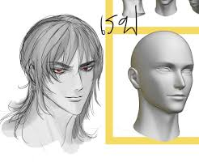

โคร่งร่างเบส

โครงร่างเบส (Base Design / Base Body) ในงานดิจิทัลอาร์ต คือหุ่นโมเดลหรือโครงสร้างดิบที่ยังไม่ได้ใส่รายละเอียด ใช้เป็นพิมพ์เขียวสำหรับเริ่มต้นทำงานเพื่อความรวดเร็วและสัดส่วนที่แม่นยำครับ แบ่งออกเป็น 2 ประเภทหลักตามสายงานดังนี้: ## 1. โครงร่างเบสสำหรับงาน 2D (2D Base Mesh / Anatomy Base) คือเส้นร่างหุ่นคน (Anatomy) หรือท่าทางเบื้องต้น เพื่อให้นักวาดนำไปวาดเสื้อผ้า หน้า ผม ทับได้ทันที * หุ่นไม้จำลอง (Mannequin Base): โครงสร้างที่แบ่งร่างกายเป็นก้อนกลมและทรงกระบอก ช่วยให้กะสัดส่วนหัว ตัว แขน ขา ได้ง่าย * เบสท่าทาง (Pose Base): หุ่นลายเส้นเปลือยเปล่าในท่าทางต่างๆ เช่น ท่ายืนตรง ท่าต่อสู้ หรือท่านั่ง เพื่อประหยัดเวลาในการคิดท่าทางใหม่ ## 2. โครงร่างเบสสำหรับงาน 3D (3D Base Mesh) คือโมเดลสามมิติที่มีโครงสร้างโพลีกอน (Polygon) ต่ำและจัดระเบียบเส้น (Topology) ไว้ดีแล้ว เพื่อนำไปใช้งานต่อ * เบสสำหรับปั้น (Sculpting Base): โมเดลรูปทรงมนุษย์แบบหยาบๆ ที่ไม่มีรายละเอียด เพื่อให้นักปั้น (3D Sculptor) นำไปลาก ดึง ขุด ในโปรแกรมอย่าง ZBrush ได้ทันทีโดยไม่ต้องขึ้นรูปจากทรงกลมใหม่ * เบสสำหรับอนิเมชัน (Animation Ready Base): โมเดลที่กางแผนที่พื้นผิว (UV Unwrapped) และวางโครงกระดูก (Rigging) ไว้พร้อมแล้ว สามารถนำไปขยับทำท่าทางได้เลย ------------------------------ คุณกำลังสนใจโครงร่างเบสสำหรับงานวาด 2D (เช่น ใน Procreate, Clip Studio Paint) หรืองานปั้น 3D (เช่น ใน Blender, ZBrush) อยู่ครับ? ผมจะได้แนะนำวิธีหามาใช้งานหรือวิธีสร้างให้ตรงจุดมากขึ้นครับ